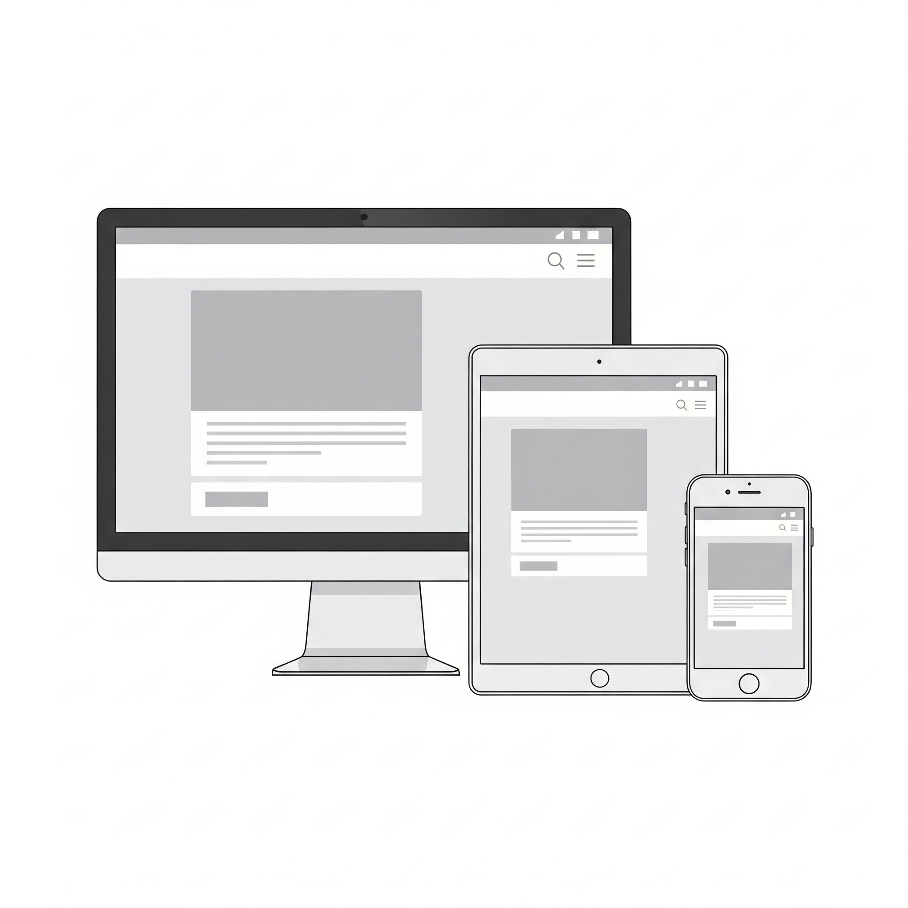
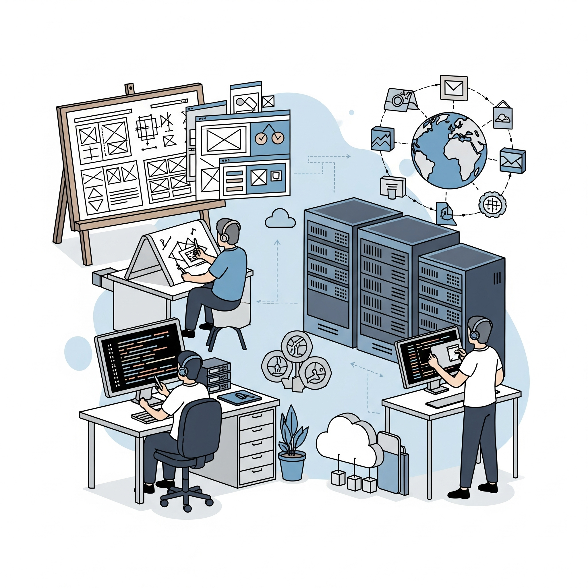
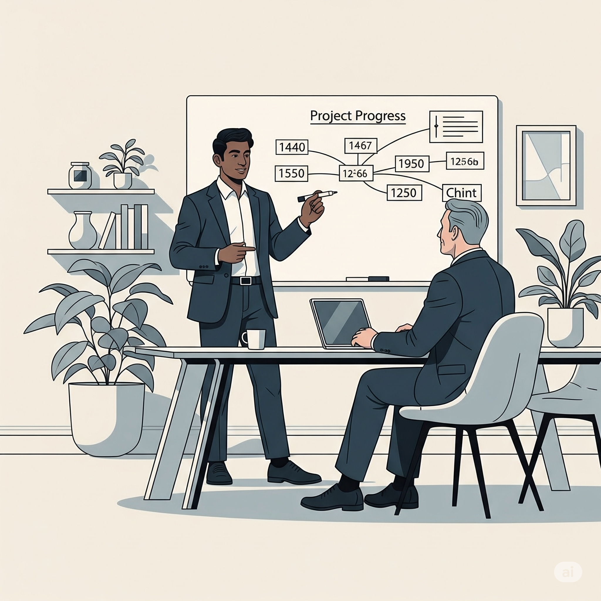

Segurança e escalabilidade
Soluções digitais com código robusto e otimizado, garantindo a segurança de seus dados e a performance ideal. Prepare seu negócio para o sucesso contínuo com um projeto escalável, capaz de acompanhar seu crescimento e as demandas futuras do mercado

Responsividade e SEO
Websites e aplicações com design responsivo e otimizado, garantindo uma experiência de usuário impecável em qualquer dispositivo: desktop, tablet ou celular. Sua marca sempre em destaque e acessível, impulsionando seu SEO e o engajamento online.
Suporte de ponta a ponta
Seu projeto completo, do conceito à nuvem. Ofereço suporte integral, desde a concepção do design da sua interface, passando pelo desenvolvimento de um código otimizado e seguro, até a hospedagem e configuração do seu site ou aplicação. Tenha tranquilidade com um serviço completo e focado no seu sucesso online.


Acompanhamento e Flexibilidade
Comigo, o desenvolvimento do seu projeto é transparente e colaborativo. Você acompanha o progresso de perto, com atualizações constantes e a possibilidade de solicitar incrementos e ajustes em cada etapa. Sua visão é fundamental e integrada ao processo de criação.